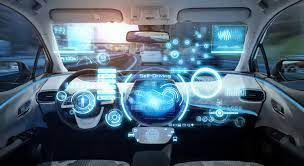

===artificial intelligence
===artificial intelligence
The self-driverless cars

A self-driving car, also known as an autonomous car, driver-less car, or robotic car (robo-car),[1][2][3] is a car that is capable of traveling without human input.[
Self-driving cars use sensors to perceive their surroundings, such as optical and thermographic cameras, radar, lidar, ultrasound/sonar, GPS, odometry and inertial measurement units.
Google Search is a form of narrow AI, as is predictive analytics, or virtual assistants. Artificial general intelligence (AGI) would be the ability for a machine to “sense, think, and act” just like a human.
===artificial intelligence
While the exploration of space is carried out mainly by astronomers with telescopes,
its physical exploration though is conducted both by uncrewed robotic space probes and human spaceflight.
Space exploration, like its classical form astronomy, is one of the main sources for space science.